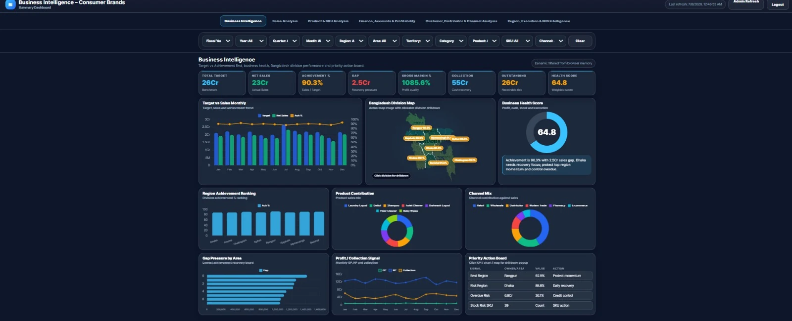
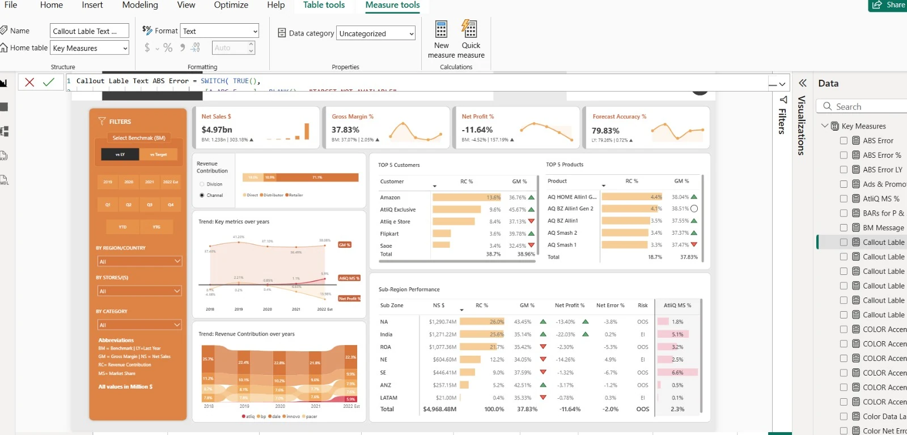

Analyze
Sales, customer, SKU, region, channel, target, operational and financial performance—translated into gaps, trends, risks and opportunities.
- Target vs achievement
- Primary & secondary sales
- Root-cause business review
I analyze business performance, build management reporting systems, automate data workflows and develop intelligence solutions that help leaders identify gaps, take action and support sustainable growth.
My work sits at the intersection of business performance, sales operations, MIS, analytics and automation. The objective is not simply to display numbers—it is to create reliable visibility, reveal what needs attention and make management action faster.
Sales, customer, SKU, region, channel, target, operational and financial performance—translated into gaps, trends, risks and opportunities.
Reporting workflows that reduce repeated manual work, strengthen data discipline and keep management information current.
Decision tools, dashboards, mobile business applications and MIS systems designed around real business processes—not presentation alone.
Each role expanded the scope—from customer operations and Google reporting, to nationwide business analysis, and now to sales MIS automation and value-added business applications.
MIS & Sales Operations Analyst
Leading structured sales MIS, performance monitoring and business reporting while developing practical digital solutions that improve visibility across the sales operation.
Daily, weekly, monthly and yearly sales MIS covering region, area, territory, SKU, target achievement, primary and secondary sales, orders and expenses.
Analyzing sales gaps, slow-moving products, customer and order performance, reporting exceptions and areas requiring management attention.
Google Forms, Google Sheets and Apps Script-based live reporting workflows, plus a new mobile intelligence solution for faster sales monitoring.
Advanced Excel, Google Sheets, Google Forms, Apps Script, MIS reporting, sales analysis and business application design.
A mobile business solution developed for T.K. Group to support sales visibility, target tracking, MIS access and faster management monitoring.
View the solution ↗Senior Business Development Analyst
Supported nationwide business performance through sales and commercial analysis, automated dashboards, planning support and cross-functional management reporting.
Nationwide primary and secondary sales, region and channel movement, product trends, target achievement, incentive and foreign-trip eligibility analysis.
Identified growth gaps, business risks and performance opportunities while supporting pricing, trade offers, demand planning and management reviews.
Resume-reported 35%–55% improvement in reporting efficiency through automated dashboards, structured MIS and faster consolidation workflows.
Power BI, Looker Studio, Advanced Excel, Power Query, Google Workspace and management reporting systems.
Customer Experience Manager — Operations & Business Data Analytics
Kormo Jobs — a Google product, working through Google’s local partner. Managed customer experience and team operations while owning analytics, CRM visibility and most weekly reporting to Google.
Operations, marketing campaigns, job matching, billing, CRM activity, customer and candidate tracking, and business performance monitoring.
Prepared regular reporting for Google and management, strengthened process discipline and translated operational activity into measurable visibility.
Managed a seven-member team; resume-reported improvements of 29%–35% in operational efficiency and 31%–49% in CRM and lead-management efficiency.
Google Data Studio, HubSpot CRM, Google Sheets, Google Forms, Apps Script-supported workflows and executive reporting.
Impact is presented only where supported by the resume or uploaded professional evidence. No artificial achievements have been added.
Spanning digital operations, FMCG business development, sales analytics, MIS reporting and business solution development.
Through automated dashboards, structured MIS formats and faster data-consolidation workflows.
Using Google Forms, Google Sheets and Apps Script-based reporting automation.
With improved follow-up discipline, workflow monitoring and operational performance visibility.
From sales monitoring to workflow automation, each solution is designed to improve business understanding, reporting speed and management control.
Primary and secondary sales, target achievement, region, area, channel, customer, product and SKU performance—reviewed through a business lens.
Daily to annual MIS, KPI packs, business reviews, rankings, incentives, exceptions and executive decision summaries.
Forms, Sheets and Apps Script workflows that streamline collection, validation, follow-up and live reporting.
Power BI and Looker Studio solutions designed for management performance monitoring, analysis and drill-down.
Mobile business applications and web dashboards that make critical information easier to access, monitor and act upon.
Each project is presented as a business solution—with the problem, approach, output and management value made clear.

A management-level web intelligence solution for reviewing sales performance, profitability, product and category movement, regional trends and business risk indicators.
A new value-added mobile business solution developed for T.K. Group to bring sales intelligence, target monitoring and MIS access closer to business users.

A multi-view Power BI solution covering executive, sales, marketing, finance and supply-chain perspectives with advanced calculations and data relationships.
Sales KPIs, target achievement, ranking and performance visibility for structured management review.
A consolidated performance view supporting sales review, product understanding and management discussion.
Experience, awards and learning credentials are shown with their original titles and context—without overstating what they represent.
Confirms service as Customer Experience Manager for Google’s local partner supporting Kormo Jobs, with responsibility for team management and most weekly reporting to Google.
Open original PDF ↗2nd Quarter 2020
4th Quarter 2020
Udemy / 365 Careers
Open original PDF ↗Udemy certificate of completion
I am open to opportunities and professional conversations involving Business Intelligence, MIS, sales analytics, reporting automation and practical business solution development.